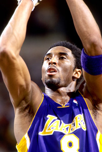

Kobe Bryant (/ˈkoʊbiː ˈbɹaɪənt/), né le 23 août 1978 à Philadelphie en Pennsylvanie et mort le 26 janvier 2020 à Calabasas en Californie, est un joueur américain de basket-ball. Il évolue dans la franchise NBA des Lakers de Los Angeles pendant vingt saisons, entre 1996 et 2016. Quintuple champion NBA, il est l'un des sept joueurs à avoir inscrit plus de 30 000 points en carrière. Il est également double champion olympique avec l'équipe des États-Unis, en 2008 et en 2012.
Il est considéré comme l'un des meilleurs joueurs de basket-ball de tous les temps.
Sélectionné en 13e position lors de la draft 1996 de la NBA par les Hornets de Charlotte, alors qu'il est lycéen, il est immédiatement transféré aux Lakers de Los Angeles. Après plusieurs saisons d'apprentissage dans la NBA, il forme avec Shaquille O'Neal l'un des duos les plus performants de l'histoire de la ligue américaine, réalisant un triplé historique, avec trois titres NBA consécutifs en 2000, 2001 et 2002.
En 2003, il est accusé d'agression sexuelle et de viol sur une jeune femme de dix-neuf ans. Bryant présente ses excuses publiquement en 2004.
Après un échec lors des finales 2004, il devient le leader de son équipe et réalise des performances individuelles de qualité, bien qu'on lui reproche alors son manque d'altruisme. Le 22 janvier 2006, il inscrit 81 points contre les Raptors de Toronto, le deuxième meilleur total de points sur un seul match de l'histoire de la NBA.
Il change son numéro 8 pour le numéro 24 avant la saison 2006-2007 qu'il termine en tant que meilleur marqueur de points. En 2008, il est désigné meilleur joueur de la saison régulière (MVP), et hisse les Lakers de Los Angeles jusqu'aux finales NBA, perdues face aux Celtics de Boston. Il remporte deux nouveaux titres en 2009 et 2010. Après plusieurs tentatives manquées et trois dernières saisons entachées de blessures, Kobe Bryant met un terme à sa carrière le 13 avril 2016, après un dernier match durant lequel il inscrit soixante points contre le Jazz de l'Utah. Après vingt saisons dans la même franchise, il compile 1 346 matches en NBA et a marqué un total de 33 643 points. Il est désigné joueur de la décennie 2000 par la NBA. Aux côtés de LeBron James, Bryant est également un acteur majeur des victoires de l'équipe des États-Unis aux Jeux olympiques 2008 et 2012. Le 18 décembre 2017, ses deux maillots (les numéros 8 et 24) sont retirés par les Lakers de Los Angeles et sont exposés en haut du Staples Center en compagnie des autres légendes de la franchise. Kobe Bryant est à ce jour le seul joueur de l'histoire de la NBA à avoir deux numéros exposés au plafond d'une même franchise.
Le 26 janvier 2020, Kobe Bryant, sa fille Gianna ainsi que le pilote et six autres passagers meurent dans un accident d'hélicoptère près de Calabasas en Californie.
Jeunesse
Originaire de Philadelphie, aux États-Unis2, Kobe Bean Bryant (/ˈkoʊbiː ˈbiːn ˈbɹaɪənt/) est élevé dans la religion catholique3. Fils du joueur de basket-ball Joe « Jelly Bean » Bryant4 et de Pamela Cox Bryant5, il passe une partie de son enfance en Italie, où son père évolue dans le championnat d'Italie de basket-ball. Il suit son père lors d'un court passage de celui-ci en France durant la saison 1991-1992 au FC Mulhouse Basket. Il rejoint néanmoins les États-Unis durant son adolescence et poursuit ses études dans un lycée de Philadelphie, le Lower Merion High School (en), où en marge de ses études il domine complètement le championnat de basket-ball : dans sa dernière année, il porte son équipe à un bilan de 31 victoires pour trois défaites et est nommé meilleur joueur de lycée de l'année (Naismith High School Player of the Year).
Avec 2 883 points inscrits sous le maillot de la Lower Merion High School, Kobe Bryant est le meilleur marqueur de l'histoire de la vallée du Delaware, devant Wilt Chamberlain et Lionel Simmons. USA Today et Parade Magazine le désignent comme le meilleur lycéen de l’année en 1996, avec une moyenne de 30,8 points, douze rebonds, 6,5 passes, quatre interceptions et 3,9 contres par match
Carrière en NBA
Débuts en NBA (1997-1999)
Il se présente à la draft 1996 de la NBA. Il est sélectionné par les Hornets de Charlotte en 13e position de la draft, mais Bryant est suivi depuis longtemps par Jerry West, le General Manager des Lakers de Los Angeles qui s'est entendu avec les Hornets pour le transfert du jeune Kobe en échange du pivot yougoslave Vlade Divac6. En effet, Bryant n'a que dix-sept ans et il est peu commun en 1996 pour un joueur de passer directement du lycée à la NBA. Charlotte qui mise sur le court terme préfère donc récupérer un intérieur référencé et cède son tour de draft aux Lakers en l'échange de Divac6. Jerry West confie alors au propriétaire de la franchise, Jerry Buss, que son équipe vient de récupérer « le vrai numéro 1 de cette draft »6.
Bryant devient le plus jeune joueur de l'histoire de la ligue lors de son premier match. Sa première saison, bien que timide (7,6 points de moyenne, six matchs démarrés sur 71), laisse entrevoir toutes les capacités du joueur, même s'il doit apprendre les rudiments du jeu collectif, n'étant pas passé par l'Université. Le duo potentiel qu'il forme avec Shaquille O'Neal pour les saisons à venir semble promis aux titres. Il gagne le Slam Dunk Contest du NBA All-Star Game 1997 lors de sa saison rookie (1996-1997).
Le three-peat (2000-2002)
Kobe Bryant devient un joueur essentiel des Lakers lors de sa quatrième saison en NBA (1999-2000)8.
À la suite de l'arrivée de Phil Jackson, l'entraîneur aux six titres de champion avec les Bulls de Michael Jordan, les Lakers remportent le titre de champion en 2000, face aux Pacers de l'Indiana.
Les Lakers atteignent en effet les finales NBA après une finale de conférence épique face aux Trail Blazers de Portland remportée par Los Angeles en sept rencontres. Au cours de la dernière rencontre, Kobe Bryant impressionne par son sang froid à un si jeune âge. Menés de quinze points à dix minutes de la fin, les Lakers reviennent et s'imposent 89-84.
La saison 2000-2001 est couronnée d'un nouveau titre et Bryant augmente encore son niveau de jeu. Il atteint des moyennes de 29 points, six rebonds et cinq passes décisives sur 67 matchs9
La saison 2001-2002 voit Kobe Bryant remporter le titre de MVP du All-Star Game à Philadelphie, sa ville natale10. Los Angeles rencontre plus de difficultés en playoffs que l'année précédente, notamment dans la série contre Sacramento, l'une des plus belles de ces dernières années. Bryant marque trente points, prend dix rebonds et offre sept passes décisives dans la victoire en prolongation à la septième manche. Un troisième titre est remporté quelques jours plus tard face aux Nets du New Jersey11.
Kobe Bryant obtient son troisième titre à seulement vingt-trois ans. Son style offensif et spectaculaire fait de lui l'un des joueurs préférés des fans.
Kobe Bryant
Kobe Bryant en 2015.
Fiche d’identité
Nom
Nationalité
Naissance
Taille
Poids
Surnom
Kobe Bean Bryant
États-Unis
23 août 1978
1,98 m (6′ 6″)
96 kg (211 lb)
Kobe, KB, Black Mamba
Situation en club
Numéro
Poste
8, 24, 33 (lycée), 10 (Team USA)
Arrière
Carrière universitaire ou amateur
1992-1996
Lower Merion High School
Carrière professionnelle
Saison
2003-2010
2010-2014
2014-2018
2018-2024
club
Cavaliers de Cleveland
Heat de Miami
Cavaliers de Cleveland
Lakers de Los Angeles
Performances individuelles et changement de numéro (2005-2006)
Kobe Bryant bat son record de points en carrière ce 22 janvier 2006 avec 81 points lors de la victoire de son équipe face à Toronto (122-104). C'est la deuxième meilleure performance de l'histoire de la NBA sur un match, derrière les 100 points de Wilt Chamberlain en 1962. En 42 minutes, Bryant met 28/46 tirs, 18/20 aux lancers francs et 7/13 à trois points. Il marque 55 points en seconde mi-temps et bat même à lui seul les Raptors sur cette période

Quatrième bague de champion (2008-2009)
Les Lakers font partie des favoris pour la saison NBA 2008-2009 avec le retour d'Andrew Bynum au sein de l'équipe. De plus, Kobe Bryant souhaite prendre sa revanche à la suite de la défaite lors des finales 2008. Fin janvier 2009, Bynum se blesse de nouveau au genou, dans le match qui opposait les Lakers aux Grizzlies de Memphis. Cependant, Lamar Odom revient à son plus haut niveau et aide les Lakers à rester en course pour la première place de la NBA. Bryant marque 61 points à 19/31 aux tirs et 20/20 aux lancers francs au Madison Square Garden le 2 février 2009. C'est la plus grande performance offensive réalisée dans la salle des Knicks, devant les 55 points de Michael Jordan (jusqu'aux 62 points de Carmelo Anthony le 24 janvier 2014). Les Lakers ont un bilan de 42 victoires et 11 défaites avant la pause du All-Star Week-end, les plaçant juste devant les Cavaliers de LeBron James. Bryant, auteur de 27 points, obtient le titre de co-MVP du All-Star Game 2009 à Phoenix avec son ancien coéquipier Shaquille O'Neal, le 15 février 2009. Avec 2 805 397 votes - soit le meilleur total de ce vote sur internet17, il obtient sa 11e participation au « match des étoiles ». Kobe Bryant dépasse Elgin Baylor puis Adrian Dantley au classement des meilleurs marqueurs de l'histoire de la NBA.
Doublé et cinquième bague de champion (2009-2010)
Après un très bon début de saison, les Lakers subissent quelques cuisants échecs, comme face au Heat de Miami de LeBron James, Dwyane Wade et Chris Bosh. Kobe Bryant remporte lui le titre de MVP du NBA All-Star Game 2011 à Los Angeles, sur son parquet, grâce à 37 points et quatorze rebonds. Les Lakers réussissent une période de 17 victoires en 18 matches après le All-Star Game mais finissent très mal la saison. Ils terminent la saison régulière à la 2e place de la conférence Ouest, derrière les Spurs de San Antonio. Au premier tour de ces playoffs, ils affrontent les Hornets de la Nouvelle-Orléans et Kobe Bryant marque 34 points dans le premier match, mais les Lakers perdent face à Chris Paul qui réussit un très bon match (33 points, sept rebonds, quatorze passes décisives et 4 interceptions). Le 22 avril, Bryant marque 30 points et réussit un 80e match en playoffs à trente points ou plus. Les Lakers s'imposent 4-2 dans la série et affrontent les Mavericks de Dallas en demi-finale de conférence. Les Lakers se font éliminer 4-0 et perdent le dernier match avec 36 points d'écart, Andrew Bynum et Lamar Odom étant expulsés pour fautes anti-sportives.
Dernier tour d'honneur et retraite (2015-2016)
Fin novembre 2015, Kobe Bryant annonce qu'il prendra sa retraite à la fin de la saison avec la lettre Dear Basketball36. Il joue le dernier match de sa carrière le 13 avril 2016 et marque soixante points dans la victoire des Lakers contre le Jazz de l'Utah sur le score de 101 à 96 avec un 22 sur 50 au tir et un six sur 21 à trois points, ce qui constitue un record en NBA pour les tirs tentés (recensés depuis 1984, le record de tirs tentés en un match étant détenu par Wilt Chamberlain) et un record personnel pour les tirs primés tentés. Cette performance est le record de points dans la ligue lors de la saison 2015-2016